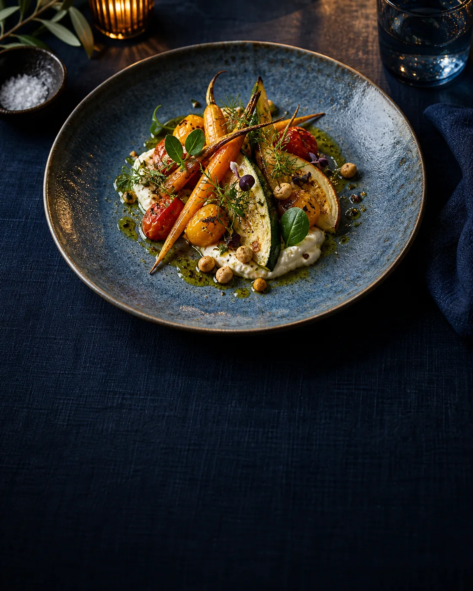
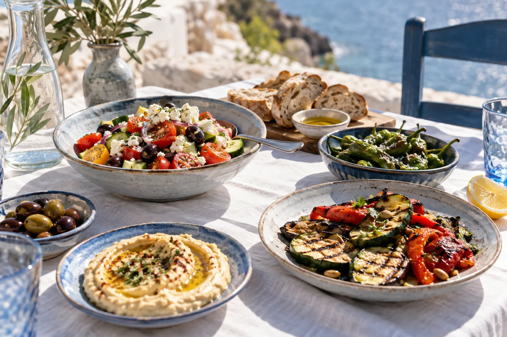
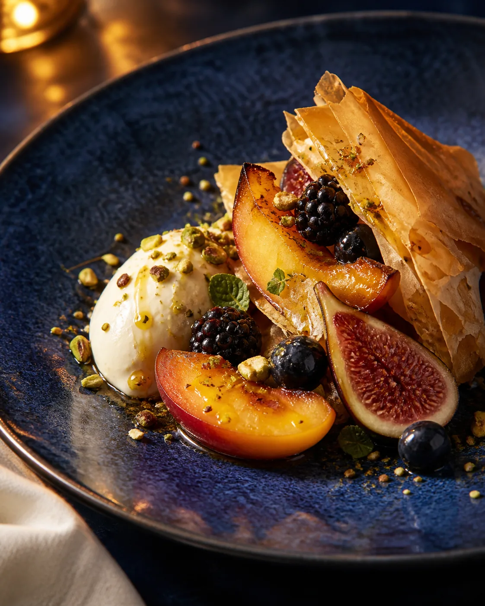

Más pasos,
más fricción.
GoogleBuscar informaciónLocalizar la cartaEncontrar contacto

Restaurante mediterráneo · Gandía
Una cocina cuidada para compartir, en el corazón de Gandía.
Imagen conceptual para esta demo
De la búsqueda a la mesa
La propuesta
Producto, elaboración y una mesa para compartir. Una presentación digital a la altura de la experiencia.


Imágenes de ambientación creadas para la demo. No representan platos oficiales de Almar.
Tu mesa
Elige cómo contactar. Sin formularios largos ni búsquedas innecesarias.
La reserva online y WhatsApp se activarían con la información oficial del restaurante.
La oportunidad
El restaurante ya tiene lo más importante. La propuesta mejora cómo lo descubren y cómo llegan hasta la reserva.